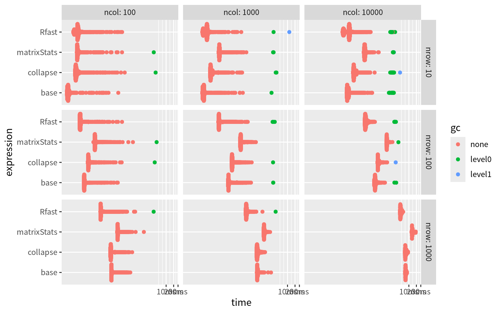
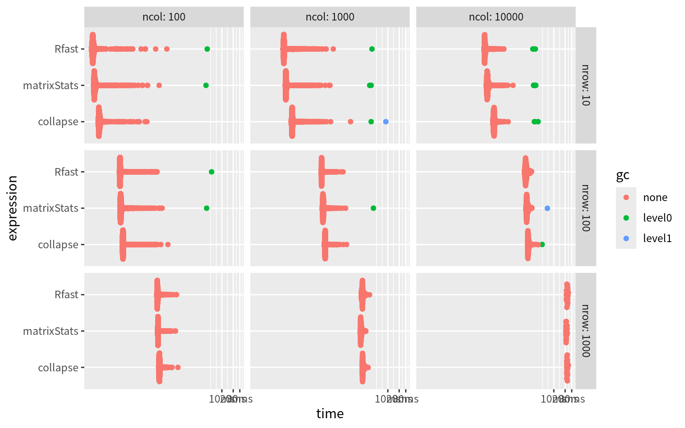
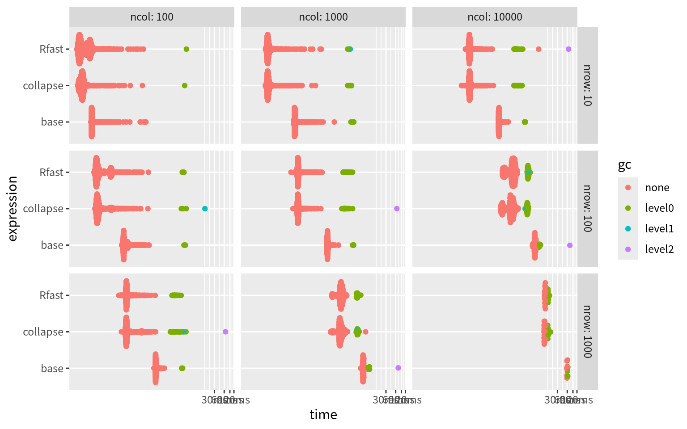
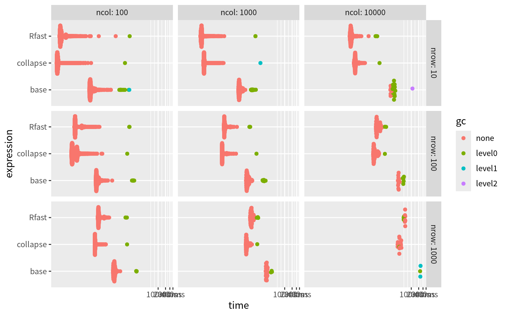

library(collapse)
requireNamespace("bench")Recently, I am trying to speed up my connectome predictive modeling code. I found that the matrix operations are the bottleneck. Specifically, I need a faster version of scale(). Based on [this blog](A Faster Scale Function | A HopStat and Jump Away (wordpress.com), I decided to benchmark the matrix operations in different packages from fastverse.
Row Means
bench <- bench::press(
nrow = c(10, 100, 1000),
ncol = c(100, 1000, 10000),
{
data <- matrix(rnorm(nrow * ncol), nrow = nrow)
bench::mark(
collapse = collapse::fmean(data),
Rfast = Rfast::colmeans(data),
matrixStats = matrixStats::colMeans2(data),
base = .colMeans(data, nrow, ncol)
)
}
)plot(bench)
Row SDs
bench <- bench::press(
nrow = c(10, 100, 1000),
ncol = c(100, 1000, 10000),
{
data <- matrix(rnorm(nrow * ncol), nrow = nrow)
bench::mark(
collapse = collapse::fsd(data),
Rfast = Rfast::colVars(data, std = TRUE),
matrixStats = matrixStats::colSds(data)
)
}
)plot(bench)
Row-wise Operations
Unfortunately, based on this issue, rowwise computations are not easy to be speeded in matrixStats. So further benchmarking will drop it.
bench <- bench::press(
nrow = c(10, 100, 1000),
ncol = c(100, 1000, 10000),
{
data <- matrix(rnorm(nrow * ncol), nrow = nrow)
vec <- rnorm(ncol)
bench::mark(
collapse = data %r-% vec,
Rfast = Rfast::eachrow(data, vec, "-"),
base = data - rep(vec, each = nrow)
)
}
)plot(bench)
Scale
fscale_rfast <- function(x) {
means <- Rfast::colmeans(x)
sds <- Rfast::colVars(x, std = TRUE)
Rfast::eachrow(
Rfast::eachrow(x, means, "-"),
sds, "/"
)
}
bench <- bench::press(
nrow = c(10, 100, 1000),
ncol = c(100, 1000, 10000),
{
data <- matrix(rnorm(nrow * ncol), nrow = nrow)
bench::mark(
collapse = fscale(data),
Rfast = fscale_rfast(data),
base = scale(data),
check = FALSE # base scale will add attributes
)
}
)plot(bench)
Conclusion
From the above figures, we will find Rfast is the fastest package for matrix operations. Previously, I have used collapse package, which is actually fast enough. But now I will switch to Rfast.